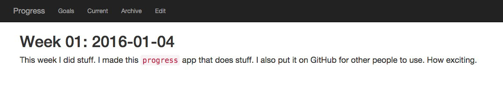

Making Progress
January 5, 2016It’s a new year and I’ve got several New Year’s resolutions I will be attempting to fulfill. I’ve created a new project called Progress to help maintain weekly snippets to track progress on goals and tasks. If you’ve ever worked at Google or another company that uses a similar practice for tracking individual work, this might sound familiar.
Features
- Web interface for viewing and editing snippets
- Stores data as flat files
- Renders Markdown
- (Optional) Page in web interface to remind self of goals
Screenshots
This is what a weekly snippet looks like in Progress: 
This is how snippets are stored on the file system (the date following the week number is the first day of the week):

This is what the (extremely simple) editor looks like (you can, of course, just edit the files in another text editor and just use Progress to render and view your snippets):

Installation
Find the download and installation instructions on GitHub! As usual, feel free to open any issues or pull requests on the repo for any bugs, feature requests, etc.
Comments